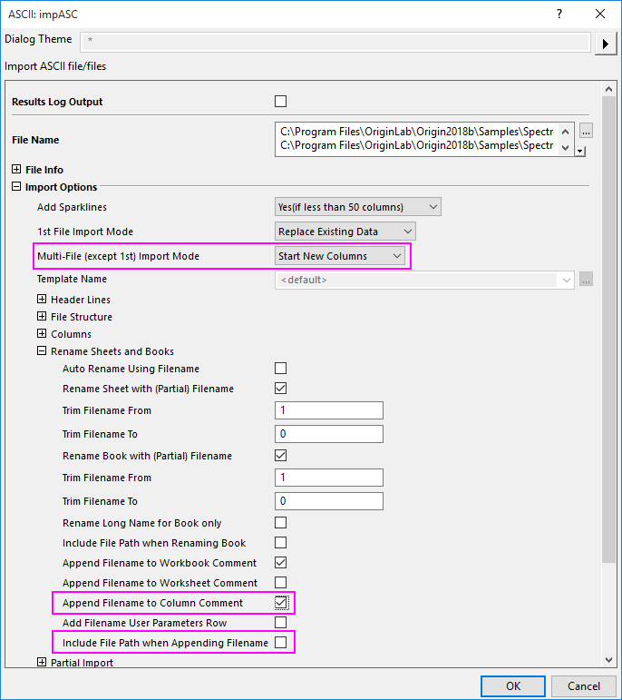
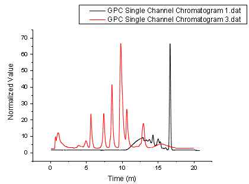
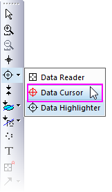
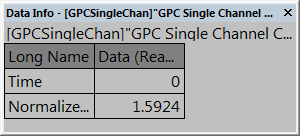
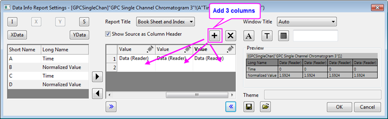
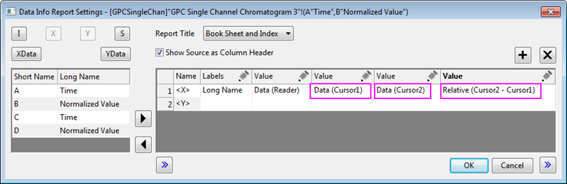
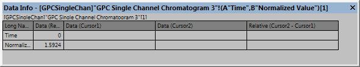
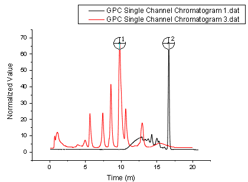
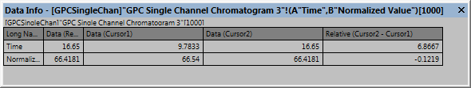
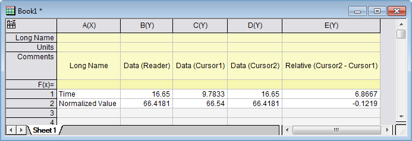

Differenz zwischen den Daten mit dem Datencursor zeigen
Compare-Data-by-DataCursor
Zusammenfassung
In Origin wird das Hilfsmittel Cursor verwendet, um den X- und Y-Abstand zwischen zwei Punkten zu messen. Sie können Cursorobjekte auf der gleichen oder unterschiedlichen Kurven platzieren. Verwenden Sie das Fenster Dateninfo, um die relativen Positionen der Cursor zueinander anzuzeigen.
Origin-Version mind. erforderlich: Origin 2019
 |
Es gibt auch das Hilfsmittel Distanzanmerkung zum Hinzufügen und Beschriften eines Doppelpfeils zwischen zwei Punkten auf dem Diagramm.
|
Was Sie lernen werden
Dieses Tutorial zeigt Ihnen, wie Sie:
- das Fenster Dateninfo benutzerdefiniert anpassen.
- relative Positionen der zwei Datenpunkte ablesen.
Schritte
- Öffnen Sie ein neues Arbeitsblatt.
- Wählen Sie Datei: Import: Mehrere ASCII im Menü. Navigieren Sie zum Ordner \Samples\Spectroscopy\Chromatography und wählen Sie GPC Single Channel Chromatogram 1.dat und GPC Single Channel Chromatogram 3.dat. Klicken Sie auf Hinzufügen, stellen Sie sicher, dass das Kontrollkästchen Optionendialog zeigen aktiviert ist, und klicken Sie dann auf OK. Dadurch öffnet sich der Dialog ImpASC. Setzen Sie in diesem Dialog den Importmodus für mehrere Dateien auf Neue Spalten öffnen, aktivieren Sie Dateiname an die Spaltenkommentare anhängen und deaktivieren Sie Pfad beim Anhängen von Dateinamen einbeziehen im Zweig Worksheet und Arbeitsmappe (neu) benennen. Klicken Sie auf OK, um diese zwei Dateien in ein Arbeitsblatt zu importieren.
- 
- Markieren Sie alle Spalten und klicken Sie mit der rechten Maustaste auf sie, um Setzen als: XY XY im Kontextmenü auszuwählen. Wählen Sie Zeichnen: Linie: Liniendiagramm, wenn alle Spalten markiert sind.
- 
- Klicken Sie auf und halten Sie die Schaltfläche Datenkoordinaten gedrückt und wählen Sie Datencursor in der Liste aus.
- 
- Das Fenster Dateninfo wird geöffnet.
- 
- Klicken Sie mit der rechten Maustaste auf das Fenster Dateninfo und wählen Sie im Kontextmenü Einstellungen. Der Dialog Einstellungen des Dateninfoberichts wird geöffnet.
- Klicken Sie dreimal auf die Schaltfläche Spalte hinzufügen, um insgesamt drei Spalten zur Tabelle Vorschau hinzuzufügen.
- 
- Klicken Sie auf das Stiftsymbol
 oberhalb der ersten hinzugefügten Spalte und ändern Sie Quelle in Daten (Cursor 1). Setzen Sie außerdem Spaltenbreite = 30. Klicken Sie auf OK.
oberhalb der ersten hinzugefügten Spalte und ändern Sie Quelle in Daten (Cursor 1). Setzen Sie außerdem Spaltenbreite = 30. Klicken Sie auf OK.
- Klicken Sie auf das Stiftsymbol oberhalb der zweiten hinzugefügten Spalte und ändern Sie Quelle in Daten (Cursor 2). Setzen Sie die Spaltenbreite = 30. Klicken Sie auf OK.
- Klicken Sie auf das Stiftsymbol oberhalb der dritten hinzugefügten Spalte und ändern Sie Quelle in Relativ (Cursor 2 - Cursor 1). Setzen Sie die Spaltenbreite = 40. Klicken Sie auf OK.
- 
- Klicken Sie auf OK, um diesen Dialog zu schließen. Das Fenster Dateninfo wird mit diesen drei neuen Spalten angezeigt.
- 
- Klicken Sie doppelt auf einen Datenpunkt in dem Diagramm, um den ersten Cursor hinzuzufügen. Wählen Sie erneut die Schaltfläche Datencursor und fügen Sie einen weiteren Cursor zu dem Diagramm hinzu, indem Sie doppelt auf den gewünschten Datenpunkt klicken.
- 
| Hinweis: Nachdem Sie alle Spalten im Dialog Einstellungen des Dateninfoberichts hinzugefügt haben, können Sie die Einstellungen als Design speichern, indem Sie auf die Schaltfläche Design speichern klicken und eine Option im Kontextmenü wählen. Beachten Sie, dass Sie Einstellungen im Diagramm (maximale Portabilität) oder in einer Designdatei mit Namen speichern können (um sie anschließend auf ein beliebiges Diagrammfenster anzuwenden). |
- Das Fenster Dateninfo wird mit den Werten der zwei Punkte und ihren relativen Werten aktualisiert.
- 
- Klicken Sie mit der rechten Maustaste auf das Fenster Dateninfo und wählen Sie Alle kopieren im Kontextmenü, um die Tabelle in ein Arbeitsblatt zu kopieren.
- 
-
|
Sie können jede Arbeitsblattzeile zu einer Spaltenbeschriftungszeile im Headerbereich machen, indem Sie mit der rechten Maustaste auf die Zeile klicken und eine der Optionen Setzen als ... oder Anhängen an ... auswählen.
|